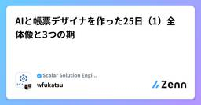
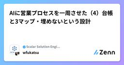
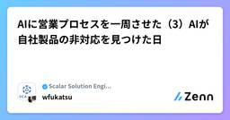

Scalar Solution Engineer Blogのフィード
https://zenn.dev/p/scalar_sol_blog
Scalar製品を活用するための情報をまとめていきます。 インフラの仕組み作り、AI駆動開発のテクニック、Scalar製品の活用方法、AI Agent の使い方など、Scalarの製品に限らず、幅広く取り扱っています。
フィード

AIと帳票デザイナを作った25日（2）ブレスト55本と計画書61本
Scalar Solution Engineer Blogのフィード
前回（全体像と3つの期）で、第 1 期の 15 日間には Issue が 1 件も無かったと書きました。では何で作業を管理していたのか。Markdown 2 種類です。docs/brainstorms/ 55 本 設計の議論と、決めたことの理由docs/plans/ 61 本 実装計画（feat 49 / fix 7 / refactor 5）この回は、この 2 つのフォーマットの話だけをします。 1. リポジトリより 1 日早い文書docs/brainstorms/ の最も古い 5 本は 2026-04-05 の日付です。リポジトリの ini...
11時間前

AIと帳票デザイナを作った25日（1）全体像と3つの期
Scalar Solution Engineer Blogのフィード
帳票をドラッグ&ドロップで設計して、サーバ側でベクター PDF を出すアプリケーションをClaude Code と作りました。稼働日は 25 日、コミット 635、PR 257、Issue 235。この連載は「何を作ったか」ではなく 「どう進めたか」 の記録です。リポジトリの Issue・PR・docs/ に加えて、私が実際に打った 387 行のプロンプトもセッションログから掘り起こして突き合わせました。第 1 回では、全体の数字と、途中で 1 回だけ大きく変わった進め方の話をします。リポジトリはこれです。https://github.com/wfukatsu/re...
2日前

AIに営業プロセスを一周させた（4）台帳と3マップ・埋めないという設計
Scalar Solution Engineer Blogのフィード
ここまでで作った記録を 1 つの台帳（account.json）に集約します。この台帳が正本で、活動計画デッキ 10 枚はその描画結果です。デッキは一度も直接編集しません。 1. 台帳のかたちaccount.json はこういう構造をしています。{ "meta": { "stage": 3, "forecast": "Best", "amount": "...", "closeDate": "2027-02-28" }, "facts": [ { "date": "...", "kind": "said|observed|assumed", "who...
4日前

AIに営業プロセスを一周させた（3）AIが自社製品の非対応を見つけた日
Scalar Solution Engineer Blogのフィード
この連載でいちばん書きたかったのがこの回です。AI が、自社製品が顧客環境に対応していないことを見つけ、それを提案書の懸念スライドの筆頭に置きました。 隠すという選択肢が設計に入っていなかったからです。 1. 製品適合の判定は「別ファイル」でやるヒアリングシートは製品非依存です。顧客の事実だけを聞き、「ScalarDB が使えるか」の判定は持ちません。判定は製品ごとの補遺（templates/sales/products/scalar.ja.md）が持ちます。分担はこうです。hearing.json 顧客の事実（製品の話は書かない） ...
5日前

AIに営業プロセスを一周させた（1）全体像と設計
Scalar Solution Engineer Blogのフィード
架空の顧客 1 社を立てて、議事録の整理から提案書・見積の納品まで、B2B 営業のプロセスをAI エージェントに一周させました。この回では何を作ったかと、なぜその順番なのかを先に置きます。 1. 作ったもの指示は 1 行でした。あなたは Scalar の営業です。仮想の顧客を想定して、スキルをフル活用して、プロセスを進めてください。結果は、Google Drive 上にフォルダを作成して、そこに保存してください。出てきたのは 21 ファイルです。フォルダ成果物枚数・形式00_活動計画活動計画デッキ（URL 不変で更新）／ account.js...
10日前
02. マイクロサービス間の一貫性を確保するための「タダ飯」はもう終った
Scalar Solution Engineer Blogのフィード
本記事は、弊社CTO山田の「Architecture in the AI Era」シリーズ Part 2 の日本語訳です。原文：https://www.linkedin.com/pulse/more-free-lunch-consistency-across-services-hiroyuki-yamada-a5ilc/訳は筆者（投稿者）によるものです。誤訳や不自然な点があればご指摘ください。今回は「AI時代のアーキテクチャ」シリーズ 第2回である。（第1回では、AIがシステムをマイクロサービスに分割すべきタイミングを変えつつあると論じた。）シングルデータベースの内部の一貫性は...
10日前
【チームによるAI駆動開発の勘所：第8回】Claude Code で貯めた知見を、 Plugin にして、配れる形にする
Scalar Solution Engineer Blogのフィード
今回は、CLAUDE.md、Skills、Hooks、判断チェックリスト —— を Claude Code のプラグインとして束ね、社内に配布する方法を扱います。 背景・目的 AI駆動開発による内製化の成果物は「動くシステム」ではない「動くシステム」を成果物にすると、システムのリリースと同時に学習が止まります。参加した数名の中に知見が残るだけで、組織には残りません。そこで最終成果物を 「自社専用の Claude Code プラグイン」 に置くことが重要です。要件は1つです。プログラムに参加していない社内メンバーが、インストールして使えることこの要件があると、途中の活動...
11日前
AIに営業プロセスを一周させた（2）議事録を確度つきの事実に分解する
Scalar Solution Engineer Blogのフィード
素材は議事録 3 本とメール 1 通でした。ここから提案書に至るまでに、一度も「議事録から直接スライドを書く」ことをしていません。間に「確度つきの事実の器」を挟みます。この回はその話です。 1. 入力にした素材架空の商談として、こういう素材を用意しました。out/sim-input/ 2026-06-18_初回訪問議事録.md DX推進部長との初回接点 2026-07-09_技術ディスカバリー議事録.md 現行 5 サブシステム、要件 4 点の受領 2026-08-06_デモ報告と社内展開_議事録.md 決裁者が同席、PoC 成功基準 4 点を合...
12日前
【チームによるAI駆動開発の勘所：第7回】AIに、二度、同じ指摘をしない
Scalar Solution Engineer Blogのフィード
この記事では、レビュー指摘がどれだけ仕組みに変換されたかを測る指標 —— 資産化率 —— の定義と、その運用方法を扱います。AI駆動開発を続けていると、レビュー指摘は際限なく増えます。しかしその指摘を「毎回言う」ままにしていると、Middle Loop の負荷は永遠に下がりません。かといって、すべての指摘を資産化するのも誤りです。1回きりの指摘まで全部ルール化すると、資産そのものが保守の負債になります。 背景・目的 なぜ「模範を配る」ことに意味があるのかAI駆動開発の実態について、興味深い調査結果がいくつか出ています。AIが生成したコードの重複は増える傾向にあり、リファ...
14日前
Kubernetesにアプリ1つ追加するだけでなぜ大変なの？Kyverno・ArgoCD・Terraformの責任分離を整理してみた【後編】
Scalar Solution Engineer Blogのフィード
!⚠️ ご注意（記事の前提条件）本記事で紹介している設計案やコード例は、設計検討段階の調査に基づくものです。実際の運用環境で稼働しているコードそのものではないため、実装の際はご自身の環境に合わせて適宜調整してください。https://zenn.dev/scalar_sol_blog/articles/aae32e93fd5680https://zenn.dev/scalar_sol_blog/articles/4daac176cb2777前編・中編では、Kyvernoの最新仕様（CEL移行）や「誰が所有するか」で分ける設計の軸、導入プロセスを調べて整理しました。この記事単体...
14日前
01. "モノリスから始めよ”は良いアドバイスだった。しかしAIが状況を変えつつある
Scalar Solution Engineer Blogのフィード
本記事は、弊社CTO山田の「Architecture in the AI Era」シリーズ Part 1 の日本語訳です。原文：https://www.linkedin.com/pulse/start-monolith-good-advice-ai-changing-hiroyuki-yamada-ou58c/訳は筆者（投稿者）によるものです。誤訳や不自然な点があればご指摘ください。「AI時代のアーキテクチャ」シリーズの第1回は、”AIはシステム構築のあり方をどう変えつつあるか”である。「早まってマイクロサービスに飛びつくな、モノリスから始めろ」ここ10年の大半、これは正しいと...
15日前
【チームによるAI駆動開発の勘所：第6回】指摘事項で書いたものを、止める側へ
Scalar Solution Engineer Blogのフィード
以前、CLAUDE.md は advisory（お願い）であって enforcement（強制）ではない、という話をしました。では「絶対に守られなければ困ること」はどこに置けばいいのか。答えは Hooks です。ただし、すべてを Hooks にすればいいわけではありません。10件の指摘を4分類に仕分ける演習を用意しました。実際にやってみると、最も多い誤りは「Hooks で止めるべきものを CLAUDE.md に流す」ことです。 背景・目的 助言と強制は、仕様として区別されているまず一次情報を確認します。Claude Code のドキュメントには次のように書かれています。C...
15日前
【チームによるAI駆動開発の勘所：第5回】サービスをまたぐ整合性 - 「どちらも使えない」が正解のとき
Scalar Solution Engineer Blogのフィード
サービスをまたぐ整合性をどう担保するか。この問いに対して、多くの現場では次のような順序で判断が進みます。外部SaaS があるから ScalarDB のような基盤には載せられないだから Saga（補償トランザクション）でいこうこの順序、間違っています。しかも、間違っていることに気づきにくい形で間違っています。この記事では、同じ業務ケースを2つの判断順序で辿り、違う結論が出ることを確認します。そして、正しい答えが「Saga」でも「Cluster」でもなく 「どちらも使えない」 であるケースを扱います。 背景・目的 AIが落とすのは、分散トランザクションの異常系サービスを...
16日前
Kubernetesのポリシー運用ってどうやるの？Kyvernoと責任分離の設計を一から調べて整理してみた【中編】
Scalar Solution Engineer Blogのフィード
!⚠️ ご注意（記事の前提条件）本記事で紹介している設計案やコード例は、設計検討段階の調査に基づくものです。Audit/Enforceモードの挙動差はminikube（Kyverno v1.18.2）で動作確認済みですが、それ以外（GeneratingPolicy等）は実際の運用環境で稼働しているコードではないため、実装の際はご自身の環境に合わせて適宜調整・検証してください。https://zenn.dev/scalar_sol_blog/articles/aae32e93fd5680前編では、Kyvernoの最新仕様（CEL移行）と、「誰が所有するか」で分ける設計の軸、具体...
17日前
【チームによるAI駆動開発の勘所：第4回】整合性の境界は、技術ではなく業務が決める
Scalar Solution Engineer Blogのフィード
この記事では、マイクロサービス設計で最も後戻りが高くつく判断 —— 「ここからここまでは、同時に成功するか、同時に失敗するかでなければならない」という範囲をどこに引くか を扱います。6つのペアについて「許せる / 許せない」を判定し、引いた境界に4つの破壊テストを当てます。 背景・目的 なぜ AI駆動開発で、境界の話が重くなるのか以前書いた記事で、AIは渡された範囲では妥当な解を出すが、範囲の外は見えていないと書きました。したがって「どの範囲で最適化させるか」の設計が重要になってきます。このとき最も強いのは、整合を取り続けなくてよい切り方を選ぶことです。1つの Epic が...
17日前
ScalarDB Sagaで管理する結果整合性の業務ワークフロー
Scalar Solution Engineer Blogのフィード
はじめにScalarDBは、複数・異種データベースにまたがるトランザクションを、強整合性を保ちながら扱うためのミドルウェア製品です。一方で、実際の業務システムには、単一のACIDトランザクションに閉じ込めにくい処理もあります。たとえば、次のような処理です。外部APIの呼び出し長時間かかる処理非同期で進む処理ここでいう外部APIには、配送会社や決済代行サービスのAPI、社内の別システムが提供するAPI、SaaSとのAPI連携などが含まれます。これらは、自社アプリケーションのDBトランザクションだけでは完結しない処理として考えられます。こうした処理まで含めて業務ワークフ...
18日前
【チームによるAI駆動開発の勘所：第3回】CLAUDE.md に書いた規約が「守られるもの」と「守られないもの」の違い
Scalar Solution Engineer Blogのフィード
概要この記事では、CLAUDE.md に書いた規約が「守られるもの」と「守られないもの」にきれいに分かれるという現象を、実験形式で共有します。同じ指示を CLAUDE.md の適用前後で実行し、7つの規約それぞれについて「効いたか / 効かなかったか」を判定する演習です。結果を先に言うと、守られなかったのは 4項目。そしてその4項目には、はっきりした共通点がありました。前回はコードレビューの原理的な限界を扱いました。今回は、見つけた知見を文書として固定したときに、どこまで効くのかを測ります。 背景・目的 記憶は、まだ資産ではないレビューには「意味論の検査で止まる」とい...
19日前
【チームによるAI駆動開発の勘所：第2回】AIが書いたコードに仕込まれる欠陥を見抜くには
Scalar Solution Engineer Blogのフィード
この記事は、日々実務でAIが書いたコードの中で気がついたことを具体例を挙げてまとめたものです。例として、注文サービスの実装が1つあり、そこに9件の欠陥が仕込まれています。設計仕様も一緒に載せますので、記事を読みながら実際に指摘を書き出してみると、AIがどのようなコードを書いて、どのようにレビューするべきなのかがわかるかと思います。 対象読者AIが生成したコードのレビュー観点を整備したい方チームに「AIの出力を疑う」姿勢を根付かせる方法を探している方分散トランザクションを扱うアプリケーションのレビューをしている方 背景・目的AI駆動開発に取り組む際に、ツールの使い方から...
20日前
「とりあえずこれで」から卒業する。コストと要件を満たすクラウドVMサイズの選び方
Scalar Solution Engineer Blogのフィード
自己紹介こんにちは、岩崎です。SESとして株式会社Scalarに常駐し、インフラエンジニアとして働いています。実務経歴8ヶ月目で、最近はマルチクラウド環境でのインフラ構築に取り組んでいます。今回は、AzureでVM（仮想マシン）を作成しようとした際にサイズ選定で詰まった経験をきっかけに、各クラウドのVMサイズ命名規則について調べたことをまとめています。 背景AzureでTerraformを使ってVMを構築しようとした際、指定したVMサイズが要件を満たせず terraform apply が失敗しました。代替を調べる中でAzureのDファミリへの変更を検討しましたが、コ...
20日前
Kubernetesのポリシー運用ってどうやるの？Kyvernoと責任分離の設計を一から調べて整理してみた【前編】
Scalar Solution Engineer Blogのフィード
!⚠️ ご注意（記事の前提条件）本記事で紹介している設計案やコード例は、設計検討段階の調査に基づくものです。ValidatingPolicy（CEL）の例はminikube（Kyverno v1.18.2）で動作確認済みですが、それ以外は実際の運用環境で稼働しているコードではないため、実装の際はご自身の環境に合わせて適宜調整・検証してください。 概要Kubernetesクラスタのベース（インフラのテンプレート）を作り、「さあ、いよいよアプリケーションを載せるぞ！」となった段階で、完全にわけが分からなくなりました。アプリを1つ追加するだけで、Terraformのあちこちのフ...
20日前